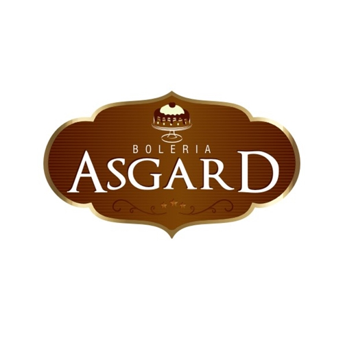
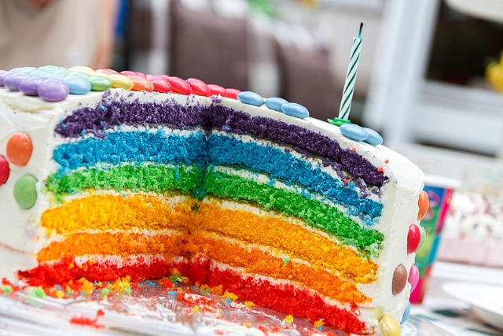

|  | ||
Quer aprender a fazer deliciosos bolos?Tudo que você precisa saber:Bem-vindo(a) à nossa página de bolos! Aqui você encontrará os bolos mais deliciosos e frescos, feitos com ingredientes de alta qualidade. Temos uma grande variedade de sabores para atender a todos os gostos e ocasiões. Deixe-nos criar o bolo perfeito para o seu próximo evento especial, seja um aniversário, um casamento ou uma festa de empresa. Nossos bolos são feitos sob encomenda e personalizados de acordo com suas preferências. Temos opções de decoração e sabor que farão da sua celebração um momento inesquecível. Além disso, também temos bolos para ocasiões mais simples, como uma sobremesa após o jantar ou um lanche da tarde. Escolha entre nossos sabores clássicos, como chocolate, baunilha e limão, ou experimente nossas opções mais criativas, como red velvet, matcha e coco com abacaxi. Não perca a chance de experimentar nossos bolos incríveis. Faça seu pedido agora e deixe-nos adoçar sua vida com nossas sobremesas deliciosas e exclusivas. |
||
| Conheça nossos produtos | ||